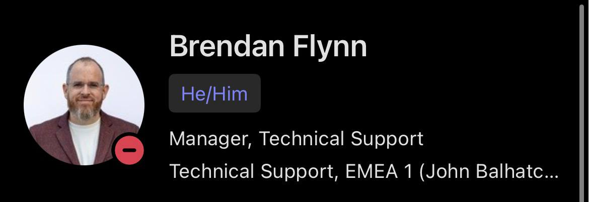

Me
He is there often enough to be felt, but not always where the eye first expects him. One becomes aware of him in traces, in movement, in the shift of a room after a thought has already passed through it. Even when standing among them, there remains the sense that part of him has withdrawn to some higher or more distant point of observation.
The Professional Development Lead
He belongs to an older order. Not outdated exactly, but fixed in form, as though the world has moved repeatedly around him and yet he has remained intact within his own shape. He is steady, structured, and stubborn in a way that makes him feel less like a modern figure and more like a surviving article from another system of thought.
The Technical Lead
He presents as kindness first, almost absurdly so, with the unmistakable softness of a Care Bear about him. But the power is in the centre. Somewhere in the chest, or stomach, or whatever hidden emblem-bearing place such creatures store their force, there is a gathering charge. It glows, it builds, it threatens weather. What looks at first like warmth can, under the right conditions, break outward as a strange and chaotic burst of care-fuelled energy.
The Operations Specialist
He moves with the strength of something built to endure pressure. There is a juggernaut quality to him, muscular, grounded, hard to stop, and yet it is carried with grace rather than brute force. His presence does not crush a room, it steadies it. There is happiness in the motion, but not softness. He feels like momentum that has learned how to smile.
The Colombian
She has mastered the exact science of enough. Never less, never more, and certainly never anything that might be mistaken for unnecessary heroism. Work, to her, is an object to be handled with measured efficiency, then set aside so that life may return to its rightful place as the real adventure. She does not go above and beyond because she sees no moral reason why she should, and in that, strangely, there is a kind of purity.
The First of the Spanish
He carries the direct energy of the blue flying monkeys from The Wizard of Oz, all sharp movement, strange instinct, and a slightly sinister grace. There is, perhaps, some older Atlantic inheritance in him too, something half Iberian, half carried outward and remade, as though the long wake of empire and migration left behind not doctrine but temperament. He seems touched by that history without being explained by it. The edge remains, the shadow remains, the mischief remains, but now it has been recruited into usefulness. He moves like he could curse the room, but instead helps it.
The Four Level Ones
Then there are the four Level Ones, who remain, for now, less understood. The Russian, the two Irish, and the second of the Spanish exist in that early mythic state where form has not yet fully resolved into meaning. They are still being deciphered. Their shapes are present, their patterns not yet confirmed. In time they may reveal themselves as saints, hazards, fools, workhorses, or some combination of all four. For now, they remain unfinished texts in the Lower Office.